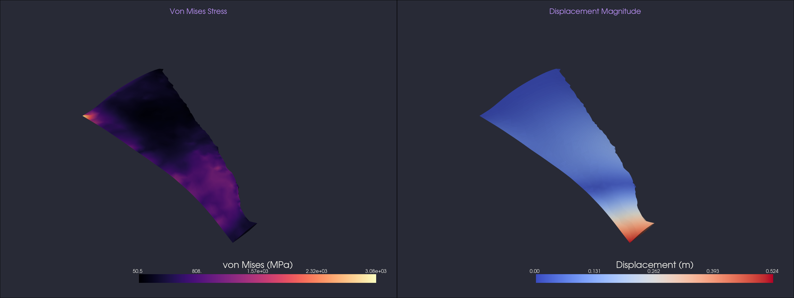
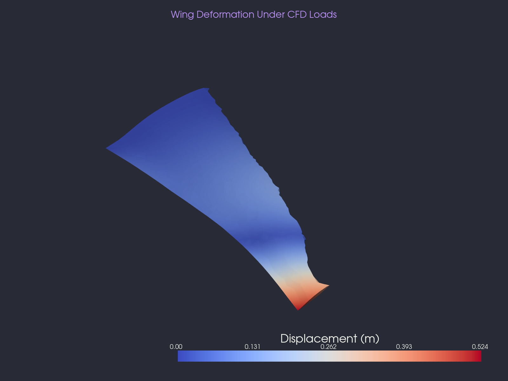

Structural Analysis
After optimizing the airfoil shape for minimum drag, the next question is whether the resulting geometry can withstand the aerodynamic loads it encounters in cruise flight. This page applies the CFD surface pressure distribution from the SU2 RANS solution onto a 3D finite element model of the optimized wing and computes the resulting stress, deformation, and structural safety margin.
Wing Geometry
The 3D wing is lofted from the optimized airfoil coordinates at the root (chord = 2.5 m) to a smaller section at the tip (chord = 0.75 m) over a half-span of 5.5 m. The planform includes 25° leading-edge sweep, 3° dihedral, and a -2° aerodynamic twist. The wing is modeled as a solid aluminum volume with no internal spars or ribs - a conservative baseline that isolates the skin structural response.
| Parameter | Value |
|---|---|
| Root Chord | 2.5 m |
| Tip Chord | 0.75 m |
| Half-Span | 5.5 m |
| Leading-Edge Sweep | 25° |
| Dihedral | 3° |
| Aerodynamic Twist | -2° |
| Max Thickness (t/c) | 12.2% |
Material and Boundary Conditions
| Property | Value |
|---|---|
| Material | Aluminum 7075-T6 |
| Young's Modulus (E) | 71.7 GPa |
| Poisson's Ratio (ν) | 0.33 |
| Yield Strength | 503 MPa |
| Constitutive Model | Linear Elastic (small strain) |
| Root Boundary | Fixed (encastre) at y = 0 |
| Aerodynamic Load | CFD surface pressure mapped to skin facets |
Load Mapping
The surface pressure distribution from the SU2 RANS solution at α = 4° is mapped onto the 3D wing skin. For each triangular facet on the outer surface, the pipeline computes the outward normal vector, the face area, and the local chord position (x/c) to interpolate the gage pressure Δp from the 2D CFD solution. The resulting force vector is distributed equally to the three nodes of each triangle:
$$\mathbf{f}_{\text{node}} = \frac{1}{3} \Delta p \cdot A_{\text{facet}} \cdot \hat{\mathbf{n}}$$The gage pressure range on the airfoil surface is [-12,270 Pa, +1,094 Pa], with suction dominating the upper surface and mild compression on the lower surface. The integrated load produces a net upward force (lift) on the wing.

Stress and Deformation Results
The finite element solve is performed using FElupe, a pure-Python implicit solver. The Cauchy stress tensor is computed at each integration point, and the von Mises equivalent stress is extracted to identify the critical loading locations on the wing.


Interpretation
The peak stress concentrates at the wing root, where the bending moment is highest. The maximum displacement occurs at the wing tip, following the expected cantilever-beam behavior. Because this model uses a solid aluminum volume with no internal structure, the absolute stress and displacement values reflect the worst-case skin loading - a real wing with spars and ribs would distribute the loads more efficiently and reduce both peak stress and tip deflection.
The factor of safety compares the peak von Mises stress to the yield strength of Aluminum 7075-T6 (σyield = 503 MPa). A factor below 1.0 indicates that the material would yield under the computed loads, which is expected for a solid wing without internal reinforcement. This result motivates the inclusion of structural members (spars, ribs, skins) in a detailed wing design.
Methodology
FEA Solver
The structural solve uses FElupe (v10.1.0), a pure-Python finite element library with implicit Newton-Raphson solvers. The wing mesh is generated by Gmsh using the OpenCASCADE kernel to loft a BSpline solid through the root and tip airfoil sections. The mesh consists of tetrahedral elements (RegionTetra) with linear elastic constitutive behavior.
FEA Pipeline
- Geometry: Gmsh OCC lofting of optimized airfoil coordinates into a 3D wing solid
- Meshing: Tetrahedral mesh with characteristic length 0.3 m (~3,400 elements, ~1,200 nodes)
- Load mapping: SU2 pressure interpolated to each skin triangle centroid, force distributed to nodes
- Boundary conditions: Fixed root (encastre at y = 0), distributed aerodynamic traction on skin
- Solve: Linear elastic static analysis via FElupe Newton-Raphson
- Post-processing: Von Mises stress extrapolated to nodes, tip displacement extracted
VTU Export
The deformed mesh with displacement vectors and von Mises stress fields is exported as a VTU file
(output_optimized/fea/results.vtu) for visualization in ParaView. See the
ParaView walkthrough for instructions on loading and rendering the structural results.